Transformation of Functions
We all know that a flat mirror enables us to see an accurate image of ourselves and whatever is behind us. When we tilt the mirror, the images we see may shift horizontally or vertically. But what happens when we bend a flexible mirror? Like a carnival funhouse mirror, it presents us with a distorted image of ourselves, stretched or compressed horizontally or vertically. In a similar way, we can distort or transform mathematical functions to better adapt them to describing objects or processes in the real world. In this section, we will take a look at several kinds of transformations.
Graphing Functions Using Vertical and Horizontal Shifts
Often when given a problem, we try to model the scenario using mathematics in the form of words, tables, graphs, and equations. One method we can employ is to adapt the basic graphs of the toolkit functions to build new models for a given scenario. There are systematic ways to alter functions to construct appropriate models for the problems we are trying to solve.
Identifying Vertical Shifts
One simple kind of transformation involves shifting the entire graph of a function up, down, right, or left. The simplest shift is a vertical shift, moving the graph up or down, because this transformation involves adding a positive or negative constant to the function. In other words, we add the same constant to the output value of the function regardless of the input. For a function the function is shifted vertically units. See Figure 2 for an example.
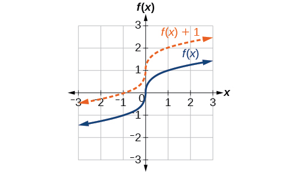
To help you visualize the concept of a vertical shift, consider that Therefore, is equivalent to Every unit of is replaced by so the value increases or decreases depending on the value of The result is a shift upward or downward.
Adding a Constant to a Function
To regulate temperature in a green building, airflow vents near the roof open and close throughout the day. Figure 3 shows the area of open vents (in square feet) throughout the day in hours after midnight, During the summer, the facilities manager decides to try to better regulate temperature by increasing the amount of open vents by 20 square feet throughout the day and night. Sketch a graph of this new function.

Solution
We can sketch a graph of this new function by adding 20 to each of the output values of the original function. This will have the effect of shifting the graph vertically up, as shown in Figure 4.
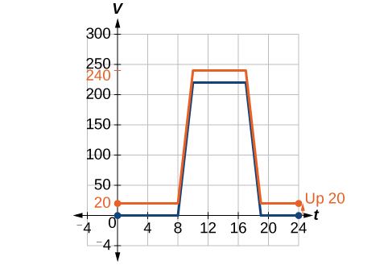
Notice that in Figure 4, for each input value, the output value has increased by 20, so if we call the new function we could write
This notation tells us that, for any value of can be found by evaluating the function at the same input and then adding 20 to the result. This defines as a transformation of the function in this case a vertical shift up 20 units. Notice that, with a vertical shift, the input values stay the same and only the output values change. See Table 1.
| 0 | 8 | 10 | 17 | 19 | 24 | |
| 0 | 0 | 220 | 220 | 0 | 0 | |
| 20 | 20 | 240 | 240 | 20 | 20 |
Shifting a Tabular Function Vertically
A function is given in Table 2. Create a table for the function
| 2 | 4 | 6 | 8 | |
| 1 | 3 | 7 | 11 |
Solution
The formula tells us that we can find the output values of by subtracting 3 from the output values of For example:
Subtracting 3 from each value, we can complete a table of values for as shown in Table 3.
| 2 | 4 | 6 | 8 | |
| 1 | 3 | 7 | 11 | |
| −2 | 0 | 4 | 8 |
Identifying Horizontal Shifts
We just saw that the vertical shift is a change to the output, or outside, of the function. We will now look at how changes to input, on the inside of the function, change its graph and meaning. A shift to the input results in a movement of the graph of the function left or right in what is known as a horizontal shift, shown in Figure 5.
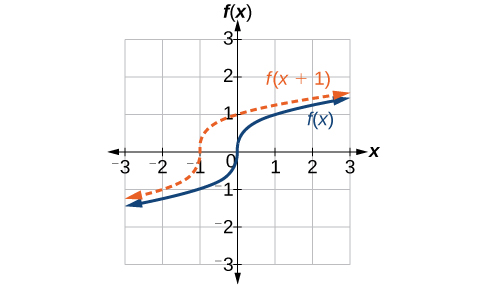
For example, if then is a new function. Each input is reduced by 2 prior to squaring the function. The result is that the graph is shifted 2 units to the right, because we would need to increase the prior input by 2 units to yield the same output value as given in
Adding a Constant to an Input
Returning to our building airflow example from Figure 3, suppose that in autumn the facilities manager decides that the original venting plan starts too late, and wants to begin the entire venting program 2 hours earlier. Sketch a graph of the new function.
Solution
We can set to be the original program and to be the revised program.
In the new graph, at each time, the airflow is the same as the original function was 2 hours later. For example, in the original function the airflow starts to change at 8 a.m., whereas for the function the airflow starts to change at 6 a.m. The comparable function values are See Figure 6. Notice also that the vents first opened to at 10 a.m. under the original plan, while under the new plan the vents reach at 8 a.m., so
In both cases, we see that, because starts 2 hours sooner, That means that the same output values are reached when
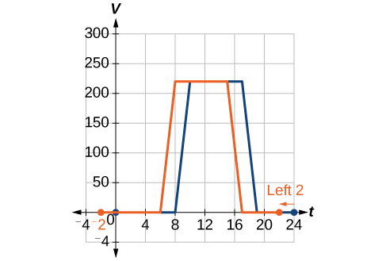
Analysis
Note that has the effect of shifting the graph to the left.
Horizontal changes or “inside changes” affect the domain of a function (the input) instead of the range and often seem counterintuitive. The new function uses the same outputs as but matches those outputs to inputs 2 hours earlier than those of Said another way, we must add 2 hours to the input of to find the corresponding output for
Shifting a Tabular Function Horizontally
A function is given in Table 4. Create a table for the function
| 2 | 4 | 6 | 8 | |
| 1 | 3 | 7 | 11 |
Solution
The formula tells us that the output values of are the same as the output value of when the input value is 3 less than the original value. For example, we know that To get the same output from the function we will need an input value that is 3 larger. We input a value that is 3 larger for because the function takes 3 away before evaluating the function
We continue with the other values to create Table 5.
| 5 | 7 | 9 | 11 | |
| 2 | 4 | 6 | 8 | |
| 1 | 3 | 7 | 11 | |
| 1 | 3 | 7 | 11 |
The result is that the function has been shifted to the right by 3. Notice the output values for remain the same as the output values for but the corresponding input values, have shifted to the right by 3. Specifically, 2 shifted to 5, 4 shifted to 7, 6 shifted to 9, and 8 shifted to 11.
Analysis
Figure 7 represents both of the functions. We can see the horizontal shift in each point.
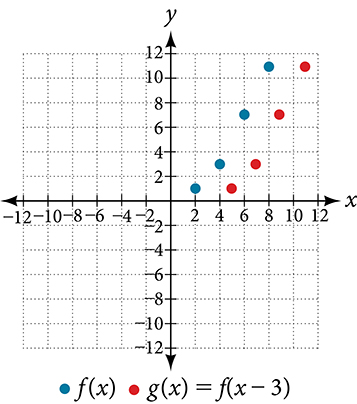
Identifying a Horizontal Shift of a Toolkit Function
Figure 8 represents a transformation of the toolkit function Relate this new function to and then find a formula for
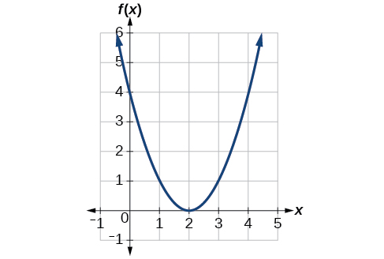
Solution
Notice that the graph is identical in shape to the function, but the x-values are shifted to the right 2 units. The vertex used to be at (0,0), but now the vertex is at (2,0). The graph is the basic quadratic function shifted 2 units to the right, so
Notice how we must input the value to get the output value the x-values must be 2 units larger because of the shift to the right by 2 units. We can then use the definition of the function to write a formula for by evaluating
Analysis
To determine whether the shift is or , consider a single reference point on the graph. For a quadratic, looking at the vertex point is convenient. In the original function, In our shifted function, To obtain the output value of 0 from the function we need to decide whether a plus or a minus sign will work to satisfy For this to work, we will need to subtract 2 units from our input values.
Interpreting Horizontal versus Vertical Shifts
The function gives the number of gallons of gas required to drive miles. Interpret and
Solution
can be interpreted as adding 10 to the output, gallons. This is the gas required to drive miles, plus another 10 gallons of gas. The graph would indicate a vertical shift.
can be interpreted as adding 10 to the input, miles. So this is the number of gallons of gas required to drive 10 miles more than miles. The graph would indicate a horizontal shift.
Combining Vertical and Horizontal Shifts
Now that we have two transformations, we can combine them together. Vertical shifts are outside changes that affect the output ( ) axis values and shift the function up or down. Horizontal shifts are inside changes that affect the input ( ) axis values and shift the function left or right. Combining the two types of shifts will cause the graph of a function to shift up or down and right or left.
Graphing Combined Vertical and Horizontal Shifts
Given sketch a graph of
Solution
The function is our toolkit absolute value function. We know that this graph has a V shape, with the point at the origin. The graph of has transformed in two ways: is a change on the inside of the function, giving a horizontal shift left by 1, and the subtraction by 3 in is a change to the outside of the function, giving a vertical shift down by 3. The transformation of the graph is illustrated in Figure 9.
Let us follow one point of the graph of
- The point is transformed first by shifting left 1 unit:
- The point is transformed next by shifting down 3 units:
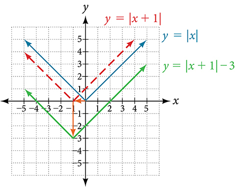
Figure 10 shows the graph of
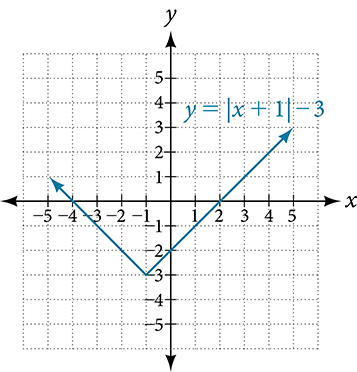
Identifying Combined Vertical and Horizontal Shifts
Write a formula for the graph shown in Figure 11, which is a transformation of the toolkit square root function.
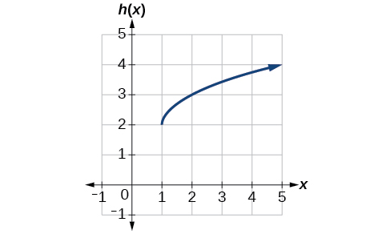
Solution
The graph of the toolkit function starts at the origin, so this graph has been shifted 1 to the right and up 2. In function notation, we could write that as
Using the formula for the square root function, we can write
Analysis
Note that this transformation has changed the domain and range of the function. This new graph has domain and range
Graphing Functions Using Reflections about the Axes
Another transformation that can be applied to a function is a reflection over the x- or y-axis. A vertical reflection reflects a graph vertically across the x-axis, while a horizontal reflection reflects a graph horizontally across the y-axis. The reflections are shown in Figure 12.
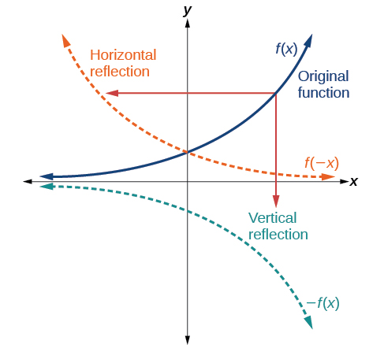
Notice that the vertical reflection produces a new graph that is a mirror image of the base or original graph about the x-axis. The horizontal reflection produces a new graph that is a mirror image of the base or original graph about the y-axis.
Reflecting a Graph Horizontally and Vertically
Reflect the graph of (a) vertically and (b) horizontally.
Solution
- ⓐ
Reflecting the graph vertically means that each output value will be reflected over the horizontal t-axis as shown in Figure 13.
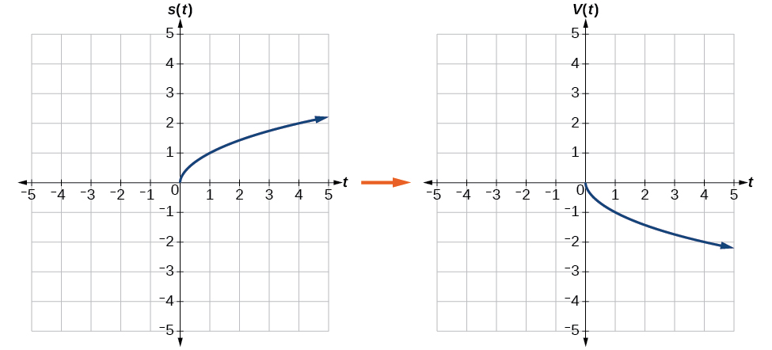
Figure 13 Vertical reflection of the square root function Because each output value is the opposite of the original output value, we can write
Notice that this is an outside change, or vertical shift, that affects the output values, so the negative sign belongs outside of the function.
- ⓑ
Reflecting horizontally means that each input value will be reflected over the vertical axis as shown in Figure 14.
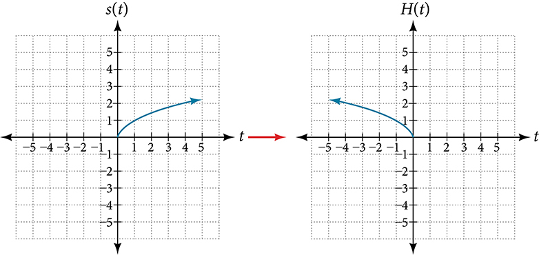
Figure 14 Horizontal reflection of the square root function Because each input value is the opposite of the original input value, we can write
Notice that this is an inside change or horizontal change that affects the input values, so the negative sign is on the inside of the function.
Note that these transformations can affect the domain and range of the functions. While the original square root function has domain and range the vertical reflection gives the function the range and the horizontal reflection gives the function the domain
Reflecting a Tabular Function Horizontally and Vertically
A function is given as Table 6. Create a table for the functions below.
- ⓐ
- ⓑ
| 2 | 4 | 6 | 8 | |
| 1 | 3 | 7 | 11 |
Solution
- ⓐ
For the negative sign outside the function indicates a vertical reflection, so the x-values stay the same and each output value will be the opposite of the original output value. See Table 7.
Table 7 Two rows and five columns. The first row is labeled, “x”, and the second is labeled, “g(x)”. The values of x are 2, 4, 6, and 8. So for g(2)=-1, g(4)=-3, g(6)=-7, and g(8)=-11. 2 4 6 8 –1 –3 –7 –11 - ⓑ
For the negative sign inside the function indicates a horizontal reflection, so each input value will be the opposite of the original input value and the values stay the same as the values. See Table 8.
Table 8 Two rows and five columns. The first row is labeled, “x”, and the second is labeled, “h(x)”. The values of x are -2, -4, -6, and -8. So for h(-2)=1, h(-4)=3, h(-6)=7, and h(-8)=11. −2 −4 −6 −8 1 3 7 11
Applying a Learning Model Equation
A common model for learning has an equation similar to where is the percentage of mastery that can be achieved after practice sessions. This is a transformation of the function shown in Figure 15. Sketch a graph of
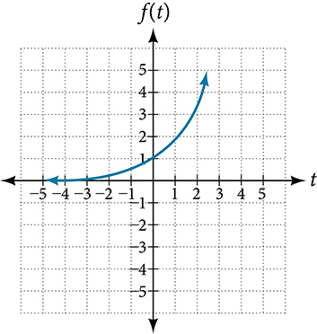
Solution
This equation combines three transformations into one equation.
- A horizontal reflection:
- A vertical reflection:
- A vertical shift:
We can sketch a graph by applying these transformations one at a time to the original function. Let us follow two points through each of the three transformations. We will choose the points (0, 1) and (1, 2).
- First, we apply a horizontal reflection: (0, 1) (–1, 2).
- Then, we apply a vertical reflection: (0, −1) (-1, –2).
- Finally, we apply a vertical shift: (0, 0) (-1, -1).
This means that the original points, (0,1) and (1,2) become (0,0) and (-1,-1) after we apply the transformations.
In Figure 16, the first graph results from a horizontal reflection. The second results from a vertical reflection. The third results from a vertical shift up 1 unit.
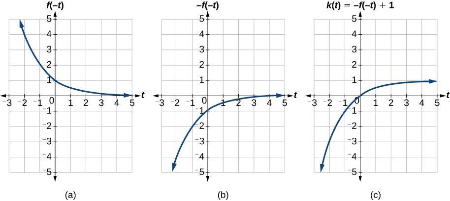
Analysis
As a model for learning, this function would be limited to a domain of with corresponding range
Determining Even and Odd Functions
Some functions exhibit symmetry so that reflections result in the original graph. For example, horizontally reflecting the toolkit functions or will result in the original graph. We say that these types of graphs are symmetric about the y-axis. Functions whose graphs are symmetric about the y-axis are called even functions.
If the graphs of or were reflected over both axes, the result would be the original graph, as shown in Figure 17.
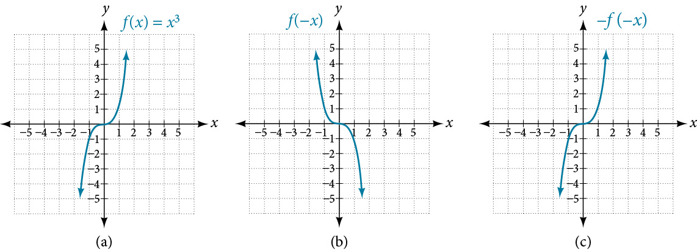
We say that these graphs are symmetric about the origin. A function with a graph that is symmetric about the origin is called an odd function.
Note: A function can be neither even nor odd if it does not exhibit either symmetry. For example, is neither even nor odd. Also, the only function that is both even and odd is the constant function
Determining whether a Function Is Even, Odd, or Neither
Is the function even, odd, or neither?
Solution
Without looking at a graph, we can determine whether the function is even or odd by finding formulas for the reflections and determining if they return us to the original function. Let’s begin with the rule for even functions.
This does not return us to the original function, so this function is not even. We can now test the rule for odd functions.
Because this is an odd function.
Analysis
Consider the graph of in Figure 18. Notice that the graph is symmetric about the origin. For every point on the graph, the corresponding point is also on the graph. For example, (1, 3) is on the graph of and the corresponding point is also on the graph.
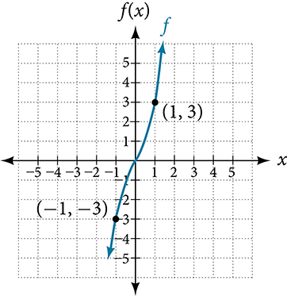
Graphing Functions Using Stretches and Compressions
Adding a constant to the inputs or outputs of a function changed the position of a graph with respect to the axes, but it did not affect the shape of a graph. We now explore the effects of multiplying the inputs or outputs by some quantity.
We can transform the inside (input values) of a function or we can transform the outside (output values) of a function. Each change has a specific effect that can be seen graphically.
Vertical Stretches and Compressions
When we multiply a function by a positive constant, we get a function whose graph is stretched or compressed vertically in relation to the graph of the original function. If the constant is greater than 1, we get a vertical stretch; if the constant is between 0 and 1, we get a vertical compression. Figure 19 shows a function multiplied by constant factors 2 and 0.5 and the resulting vertical stretch and compression.
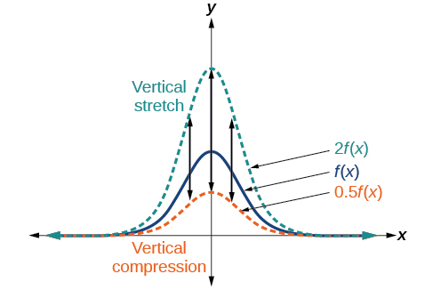
Graphing a Vertical Stretch
A function models the population of fruit flies. The graph is shown in Figure 20.
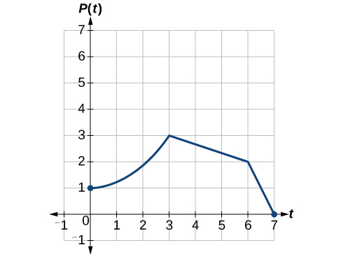
A scientist is comparing this population to another population, whose growth follows the same pattern, but is twice as large. Sketch a graph of this population.
Solution
Because the population is always twice as large, the new population’s output values are always twice the original function’s output values. Graphically, this is shown in Figure 21.
If we choose four reference points, (0, 1), (3, 3), (6, 2) and (7, 0) we will multiply all of the outputs by 2.
The following shows where the new points for the new graph will be located.
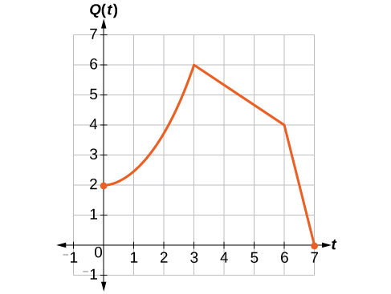
Symbolically, the relationship is written as
This means that for any input the value of the function is twice the value of the function Notice that the effect on the graph is a vertical stretching of the graph, where every point doubles its distance from the horizontal axis. The input values, stay the same while the output values are twice as large as before.
Finding a Vertical Compression of a Tabular Function
A function is given as Table 10. Create a table for the function
| 2 | 4 | 6 | 8 | |
| 1 | 3 | 7 | 11 |
Solution
The formula tells us that the output values of are half of the output values of with the same inputs. For example, we know that Then
We do the same for the other values to produce Table 11.
Analysis
The result is that the function has been compressed vertically by Each output value is divided in half, so the graph is half the original height.
Recognizing a Vertical Stretch
The graph in Figure 22 is a transformation of the toolkit function Relate this new function to and then find a formula for
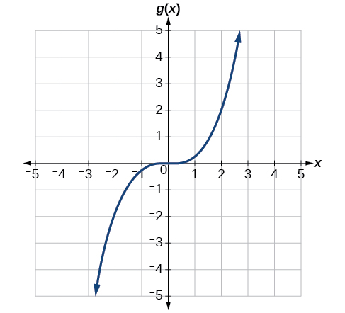
Solution
When trying to determine a vertical stretch or shift, it is helpful to look for a point on the graph that is relatively clear. In this graph, it appears that With the basic cubic function at the same input, Based on that, it appears that the outputs of are the outputs of the function because From this we can fairly safely conclude that
We can write a formula for by using the definition of the function
Horizontal Stretches and Compressions
Now we consider changes to the inside of a function. When we multiply a function’s input by a positive constant, we get a function whose graph is stretched or compressed horizontally in relation to the graph of the original function. If the constant is between 0 and 1, we get a horizontal stretch; if the constant is greater than 1, we get a horizontal compression of the function.
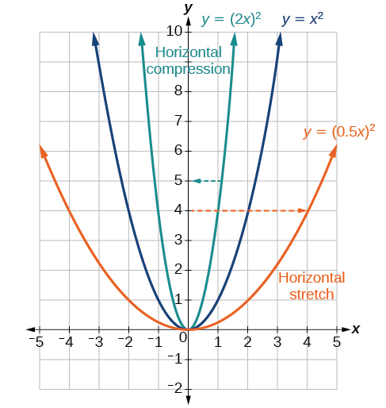
Given a function the form results in a horizontal stretch or compression. Consider the function Observe Figure 23. The graph of is a horizontal stretch of the graph of the function by a factor of 2. The graph of is a horizontal compression of the graph of the function by a factor of .
Graphing a Horizontal Compression
Suppose a scientist is comparing a population of fruit flies to a population that progresses through its lifespan twice as fast as the original population. In other words, this new population, will progress in 1 hour the same amount as the original population does in 2 hours, and in 2 hours, it will progress as much as the original population does in 4 hours. Sketch a graph of this population.
Solution
Symbolically, we could write
See Figure 24 for a graphical comparison of the original population and the compressed population.
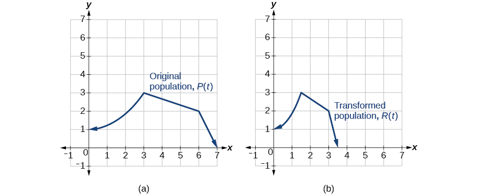
Analysis
Note that the effect on the graph is a horizontal compression where all input values are half of their original distance from the vertical axis.
Finding a Horizontal Stretch for a Tabular Function
A function is given as Table 13. Create a table for the function
| 2 | 4 | 6 | 8 | |
| 1 | 3 | 7 | 11 |
Solution
The formula tells us that the output values for are the same as the output values for the function at an input half the size. Notice that we do not have enough information to determine because and we do not have a value for in our table. Our input values to will need to be twice as large to get inputs for that we can evaluate. For example, we can determine
We do the same for the other values to produce Table 14.
| 4 | 8 | 12 | 16 | |
| 1 | 3 | 7 | 11 |
Figure 25 shows the graphs of both of these sets of points.
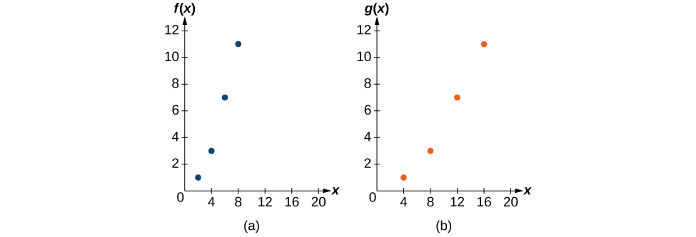
Analysis
Because each input value has been doubled, the result is that the function has been stretched horizontally by a factor of 2.
Recognizing a Horizontal Compression on a Graph
Relate the function to in Figure 26.
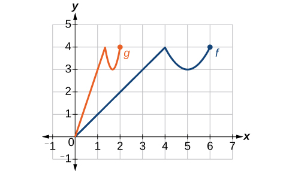
Solution
The graph of looks like the graph of horizontally compressed. Because ends at and ends at we can see that the values have been compressed by because We might also notice that and Either way, we can describe this relationship as This is a horizontal compression by
Analysis
Notice that the coefficient needed for a horizontal stretch or compression is the reciprocal of the stretch or compression. So to stretch the graph horizontally by a scale factor of 4, we need a coefficient of in our function: This means that the input values must be four times larger to produce the same result, requiring the input to be larger, causing the horizontal stretching.
Performing a Sequence of Transformations
When combining transformations, it is very important to consider the order of the transformations. For example, vertically shifting by 3 and then vertically stretching by 2 does not create the same graph as vertically stretching by 2 and then vertically shifting by 3, because when we shift first, both the original function and the shift get stretched, while only the original function gets stretched when we stretch first.
When we see an expression such as which transformation should we start with? The answer here follows nicely from the order of operations. Given the output value of we first multiply by 2, causing the vertical stretch, and then add 3, causing the vertical shift. In other words, multiplication before addition.
Horizontal transformations are a little trickier to think about. When we write for example, we have to think about how the inputs to the function relate to the inputs to the function Suppose we know What input to would produce that output? In other words, what value of will allow We would need To solve for we would first subtract 3, resulting in a horizontal shift, and then divide by 2, causing a horizontal compression.
This format ends up being very difficult to work with, because it is usually much easier to horizontally stretch a graph before shifting. We can work around this by factoring inside the function.
Let’s work through an example.
We can factor out a 2.
Now we can more clearly observe a horizontal shift to the left 2 units and a horizontal compression. Factoring in this way allows us to horizontally stretch first and then shift horizontally.
Finding a Triple Transformation of a Tabular Function
Given Table 15 for the function create a table of values for the function
| 6 | 12 | 18 | 24 | |
| 10 | 14 | 15 | 17 |
Solution
There are three steps to this transformation, and we will work from the inside out. Starting with the horizontal transformations, is a horizontal compression by which means we multiply each value by See Table 16.
| 2 | 4 | 6 | 8 | |
| 10 | 14 | 15 | 17 |
Looking now to the vertical transformations, we start with the vertical stretch, which will multiply the output values by 2. We apply this to the previous transformation. See Table 17.
| 2 | 4 | 6 | 8 | |
| 20 | 28 | 30 | 34 |
Finally, we can apply the vertical shift, which will add 1 to all the output values. See Table 18.
| 2 | 4 | 6 | 8 | |
| 21 | 29 | 31 | 35 |
Finding a Triple Transformation of a Graph
Use the graph of in Figure 27 to sketch a graph of
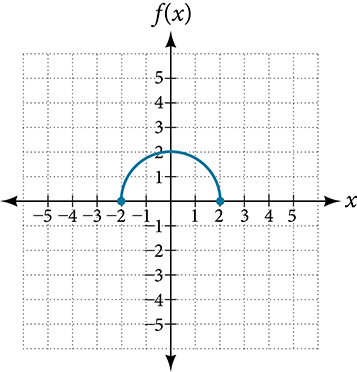
Solution
To simplify, let’s start by factoring out the inside of the function.
By factoring the inside, we can first horizontally stretch by 2, as indicated by the on the inside of the function. Remember that twice the size of 0 is still 0, so the point (0,2) remains at (0,2) while the point (2,0) will stretch to (4,0). See Figure 28.
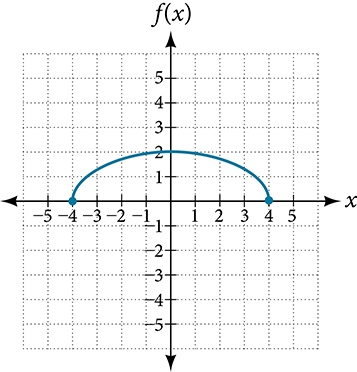
Next, we horizontally shift left by 2 units, as indicated by See Figure 29.
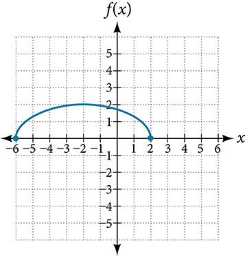
Last, we vertically shift down by 3 to complete our sketch, as indicated by the on the outside of the function. See Figure 30.
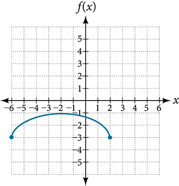
Key Equations
| Vertical shift | (up for ) |
| Horizontal shift | (right for ) |
| Vertical reflection | |
| Horizontal reflection | |
| Vertical stretch | ( ) |
| Vertical compression | |
| Horizontal stretch | |
| Horizontal compression | ( ) |
Key Concepts
- A function can be shifted vertically by adding a constant to the output. See Example 1 and Example 2.
- A function can be shifted horizontally by adding a constant to the input. See Example 3, Example 4, and Example 5.
- Relating the shift to the context of a problem makes it possible to compare and interpret vertical and horizontal shifts. See Example 6.
- Vertical and horizontal shifts are often combined. See Example 7 and Example 8.
- A vertical reflection reflects a graph about the axis. A graph can be reflected vertically by multiplying the output by –1.
- A horizontal reflection reflects a graph about the axis. A graph can be reflected horizontally by multiplying the input by –1.
- A graph can be reflected both vertically and horizontally. The order in which the reflections are applied does not affect the final graph. See Example 9.
- A function presented in tabular form can also be reflected by multiplying the values in the input and output rows or columns accordingly. See Example 10.
- A function presented as an equation can be reflected by applying transformations one at a time. See Example 11.
- Even functions are symmetric about the axis, whereas odd functions are symmetric about the origin.
- Even functions satisfy the condition
- Odd functions satisfy the condition
- A function can be odd, even, or neither. See Example 12.
- A function can be compressed or stretched vertically by multiplying the output by a constant. See Example 13, Example 14, and Example 15.
- A function can be compressed or stretched horizontally by multiplying the input by a constant. See Example 16, Example 17, and Example 18.
- The order in which different transformations are applied does affect the final function. Both vertical and horizontal transformations must be applied in the order given. However, a vertical transformation may be combined with a horizontal transformation in any order. See Example 19 and Example 20.
Section Exercises
Verbal
When examining the formula of a function that is the result of multiple transformations, how can you tell a horizontal shift from a vertical shift?
Solution
A horizontal shift results when a constant is added to or subtracted from the input. A vertical shifts results when a constant is added to or subtracted from the output.
When examining the formula of a function that is the result of multiple transformations, how can you tell a horizontal stretch from a vertical stretch?
When examining the formula of a function that is the result of multiple transformations, how can you tell a horizontal compression from a vertical compression?
Solution
A horizontal compression results when a constant greater than 1 is multiplied by the input. A vertical compression results when a constant between 0 and 1 is multiplied by the output.
When examining the formula of a function that is the result of multiple transformations, how can you tell a reflection with respect to the x-axis from a reflection with respect to the y-axis?
How can you determine whether a function is odd or even from the formula of the function?
Solution
For a function substitute for in Simplify. If the resulting function is the same as the original function, then the function is even. If the resulting function is the opposite of the original function, then the original function is odd. If the function is not the same or the opposite, then the function is neither odd nor even.
Algebraic
Write a formula for the function obtained when the graph of is shifted up 1 unit and to the left 2 units.
Write a formula for the function obtained when the graph of is shifted down 3 units and to the right 1 unit.
Solution
Write a formula for the function obtained when the graph of is shifted down 4 units and to the right 3 units.
Write a formula for the function obtained when the graph of is shifted up 2 units and to the left 4 units.
Solution
For the following exercises, describe how the graph of the function is a transformation of the graph of the original function
Solution
The graph of is a horizontal shift to the left 43 units of the graph of
Solution
The graph of is a horizontal shift to the right 4 units of the graph of
Solution
The graph of is a vertical shift up 8 units of the graph of
Solution
The graph of is a vertical shift down 7 units of the graph of
Solution
The graph of is a horizontal shift to the left 4 units and a vertical shift down 1 unit of the graph of
For the following exercises, determine the interval(s) on which the function is increasing and decreasing.
Solution
decreasing on and increasing on
Solution
decreasing on
Graphical
For the following exercises, use the graph of shown in Figure 31 to sketch a graph of each transformation of
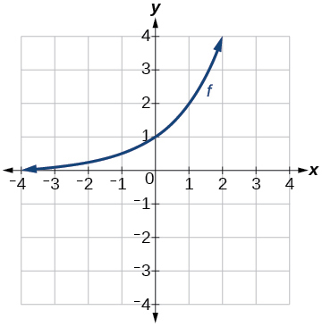
Solution
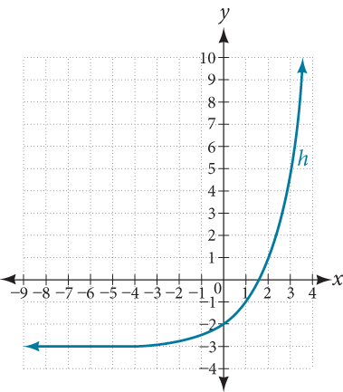
For the following exercises, sketch a graph of the function as a transformation of the graph of one of the toolkit functions.
Solution
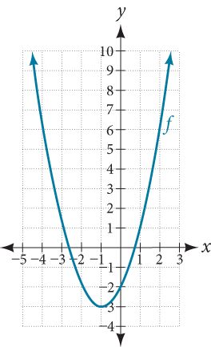
Solution
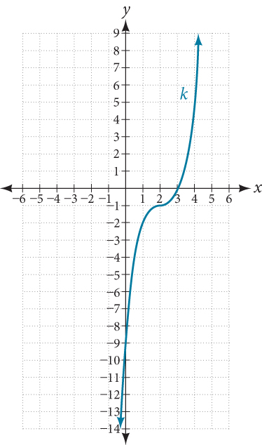
Numeric
Tabular representations for the functions and are given below. Write and as transformations of
| −2 | −1 | 0 | 1 | 2 | |
| −2 | −1 | −3 | 1 | 2 |
| −1 | 0 | 1 | 2 | 3 | |
| −2 | −1 | −3 | 1 | 2 |
| −2 | −1 | 0 | 1 | 2 | |
| −1 | 0 | −2 | 2 | 3 |
Solution
Tabular representations for the functions and are given below. Write and as transformations of
| −2 | −1 | 0 | 1 | 2 | |
| −1 | −3 | 4 | 2 | 1 |
| −3 | −2 | −1 | 0 | 1 | |
| −1 | −3 | 4 | 2 | 1 |
| −2 | −1 | 0 | 1 | 2 | |
| −2 | −4 | 3 | 1 | 0 |
For the following exercises, write an equation for each graphed function by using transformations of the graphs of one of the toolkit functions.
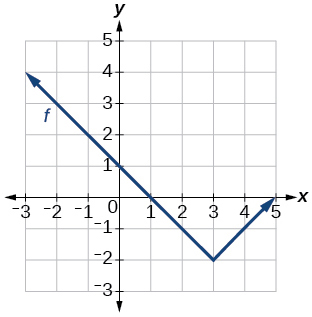
Solution
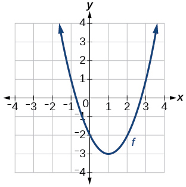
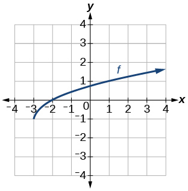
Solution
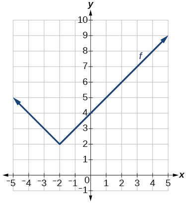
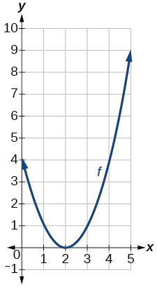
Solution
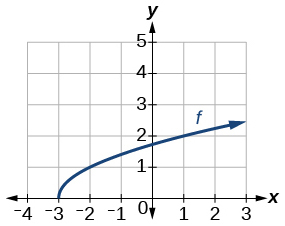
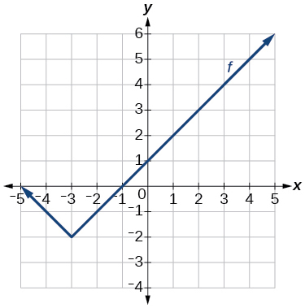
Solution
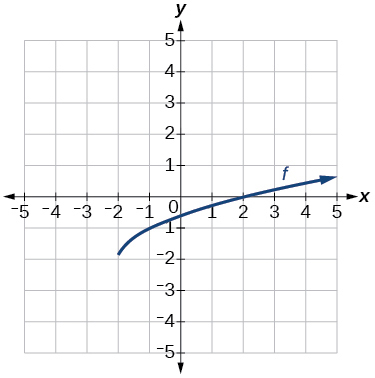
For the following exercises, use the graphs of transformations of the square root function to find a formula for each of the functions.
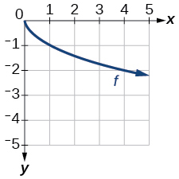
Solution
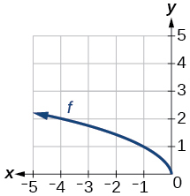
For the following exercises, use the graphs of the transformed toolkit functions to write a formula for each of the resulting functions.
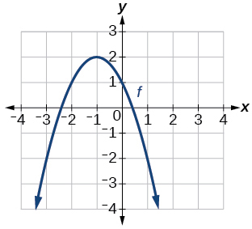
Solution
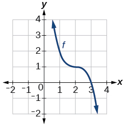
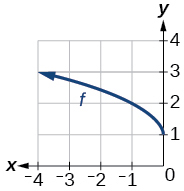
Solution
For the following exercises, determine whether the function is odd, even, or neither.
Solution
even
Solution
odd
Solution
even
For the following exercises, describe how the graph of each function is a transformation of the graph of the original function
Solution
The graph of is a vertical reflection (across the -axis) of the graph of
Solution
The graph of is a vertical stretch by a factor of 4 of the graph of
Solution
The graph of is a horizontal compression by a factor of of the graph of
Solution
The graph of is a horizontal stretch by a factor of 3 of the graph of
Solution
The graph of is a horizontal reflection across the -axis and a vertical stretch by a factor of 3 of the graph of
For the following exercises, write a formula for the function that results when the graph of a given toolkit function is transformed as described.
The graph of is reflected over the -axis and horizontally compressed by a factor of .
Solution
The graph of is reflected over the -axis and horizontally stretched by a factor of 2.
The graph of is vertically compressed by a factor of then shifted to the left 2 units and down 3 units.
Solution
The graph of is vertically stretched by a factor of 8, then shifted to the right 4 units and up 2 units.
The graph of is vertically compressed by a factor of then shifted to the right 5 units and up 1 unit.
Solution
The graph of is horizontally stretched by a factor of 3, then shifted to the left 4 units and down 3 units.
For the following exercises, describe how the formula is a transformation of a toolkit function. Then sketch a graph of the transformation.
Solution
The graph of the function is shifted to the left 1 unit, stretched vertically by a factor of 4, and shifted down 5 units.
Solution
The graph of is stretched vertically by a factor of 2, shifted horizontally 4 units to the right, reflected across the horizontal axis, and then shifted vertically 3 units up.
Solution
The graph of the function is compressed vertically by a factor of
Solution
The graph of the function is stretched horizontally by a factor of 3 and then shifted vertically downward by 3 units.
Solution
The graph of is reflected across the y-axis and then shifted right 4 units.
For the following exercises, use the graph in Figure 32 to sketch the given transformations.
Solution
Analysis
As with the earlier vertical shift, notice the input values stay the same and only the output values change.